Galleries
Portraits of Witches and Wizards
Here are the portraits of witches and wizards you can choose for your avatar.
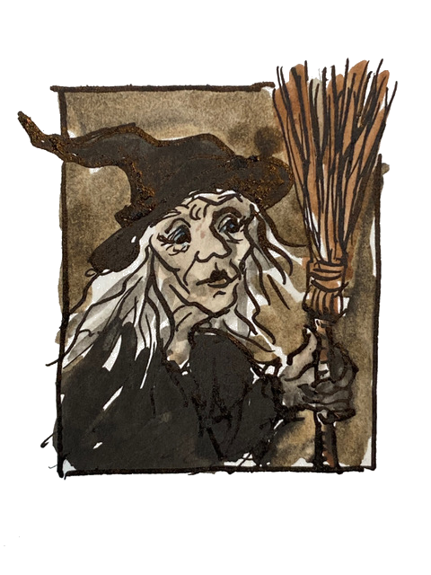
An old female witch
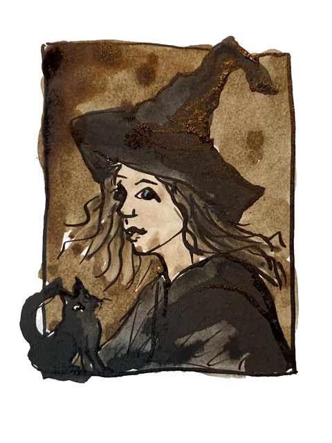
A young female witch

An old male witch

A young male witch

An old female wizard
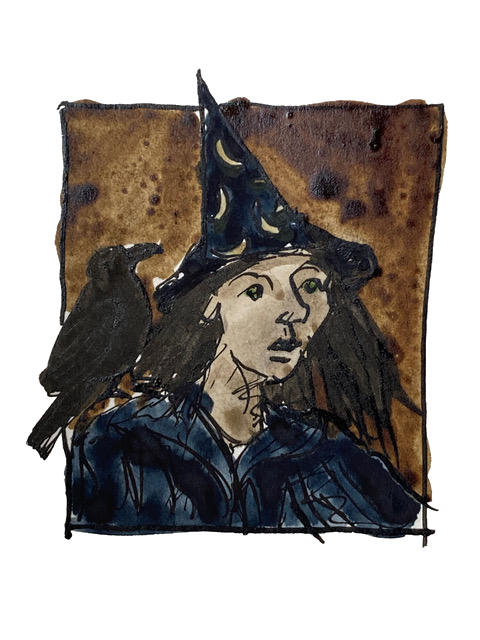
A young female wizard

An old male wizard
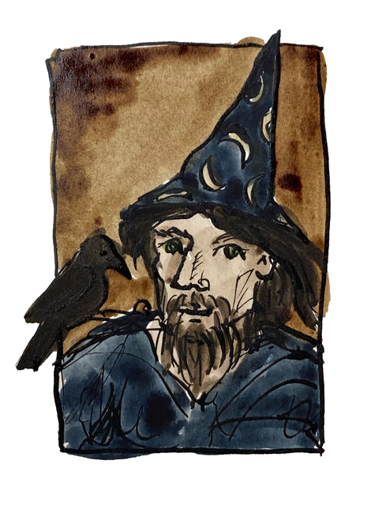
A young male wizard
Accessories
All witches and wizards need their magical accessories to help them do their magic. In Terry Pratchett’s Discworld series, witches and wizards can buy what they need from Boffo’s Novelty and Joke Shop in Ankh-Morpork. Beware, though. The magic items may look great, but they often don’t work as expected, if they work at all.
But, if you really want to accessorise your witch or wizard, then here are some items for the magical shopper to consider.
When you are using these accessories in your web pages, the catalogue number is the file name you use to reference the image.
Magic Wand
A basic wand to cast your spells with.
Catalogue number: wand-magic-duotone-regular-full.svg

Faulty Magic Wand
Special Offer. This wand constantly leaks magic and may not cast spells exactly as intended.
Catalogue number: wand-magic-sparkles-sharp-duotone-regular-full.svg
Witch’s Hat
A classic black hat for any witch.
Catalogue number: hat-witch-solid-full.svg
Wizard’s Hat
A pointy hat with stars for any wizard.
Catalogue number: hat-wizard-duotone-solid-full.svg
Superior Witch’s Hat
When the plain black hat just won’t do.
Catalogue number: hat-witch-sharp-duotone-regular-full.svg
Broomstick
A light broomstick for any witch or wizard who needs to get around quickly. Can also be used for sweeping dusty floors.
Catalogue number: broom-duotone-light-full.svg

Heavy Duty Broomstick
A sturdy broomstick for those tough cleaning jobs or long-distance flying. Can carry 2 people (or 1 large wizard) and a small animal familiar, not including ravens as they can fly alongside.
Catalogue number: broom-wide-duotone-regular-full.svg

Cauldron
Perfect for making potions and magical drinks. Can be used as a washing up bowl in an emergency. Please wash well after use.
Catalogue number: cauldron-duotone-light-full.svg
Potion Flask
A handy flask for holding potions and magical drinks. Comes with a secure stopper to stop spills.
Catalogue number: flask-round-potion-duotone-light-full.svg
Spell Book
A well-used book with spells for all occasions. Filled with many enchantments and charms for all skill levels. This edition also includes magical curses for advanced witches and wizards who need to curse at someone.
Catalogue number: book-spine-duotone-regular-full.svg

Ever Open Spell Book
Does your spell book ever close just when you get to the important part? This magic book stays open for easy reading. Note: Cannot be stored on a book shelf as it will not close properly.
Catalogue number: book-open-lines-duotone-regular-full.svg
Mystic Candle Holder
A candle holder for casting spells at night and creating a special mood. Comes with a variety of assorted magical candles. Black dribbly candles for evil rites sold separately.
Catalogue number: candle-holder-duotone-light-full.svg

Portable Thunderbolt
Useful for calling thunderstorms on dry days or smiting your enemies. Batteries not included.
Catalogue number: cloud-bolt-sharp-duotone-light-full.svg
Cat Familiar
Part of our Fun Familiars range. A friendly cat for any witch or wizard. Comes in any colour you like as long as it’s black.
Catalogue number: cat-duotone-light-full.svg
Bat Familiar
Part of our Fun Familiars range. A spooky bat for any wizard or witch. The manual says that it drinks blood, but in fact any red liquid will do. Squeaks at night.
Catalogue number: bat-duotone-light-full.svg

Raven Familiar
Part of our Fun Familiars range. A wise old bird for any wizard or witch. Known for being smart and funny. Only one previous owner who taught it to say “Nevermore” and now it won’t stop.
Catalogue number: crow-duotone-solid-full.svg
Black Dragon Familiar
Part of our Fun Familiars range. A small black dragon. Breathes fire when angry or upset. Needs regular feeding with coal. Handle with care as it may explode when scared.
Catalogue number: dragon-solid-full.svg

Green Dragon Familiar
Part of our Fun Familiars range. A small green dragon. This is a newer green version of the black dragon familiar. Instead of coal, it runs on recycled solar and wind energy. Good for the planet.
Catalogue number: dragon-duotone-thin-full.svg
Toad Familiar
Part of our Fun Familiars range. A slimy toad. Poisonous skin makes it unsafe to touch. Missing a toe, due to use by witches in creating double, double toil and trouble.
Catalogue number: frog-duotone-regular-full.svg
Spider Familiar
Part of our Fun Familiars range. A large spider. Can creep into very small spaces. With its many eyes and legs this familiar is perfect for spying on your enemies and running away afterwards.
Catalogue number: spider-duotone-light-full.svg
Octopus Familiar
Part of our Fun Familiars range. A very smart octopus. Can solve puzzles and open jam jars with its tentacles. Note: Do not leave alone with jam jars or unfinished sudoku puzzles.
Catalogue number: octopus-duotone-regular-full.svg
Familiars
To help you get to know your Fun Familiar our brave team of magical researchers have been out taking photos of the familiars in the wild. Here are some of the photos they took of the familiars in action.
When you are using these familiars in your web pages, the catalogue number is the file name you use to reference the image.
Bat Familiar
Catalogue number: bat-familiar.jpg
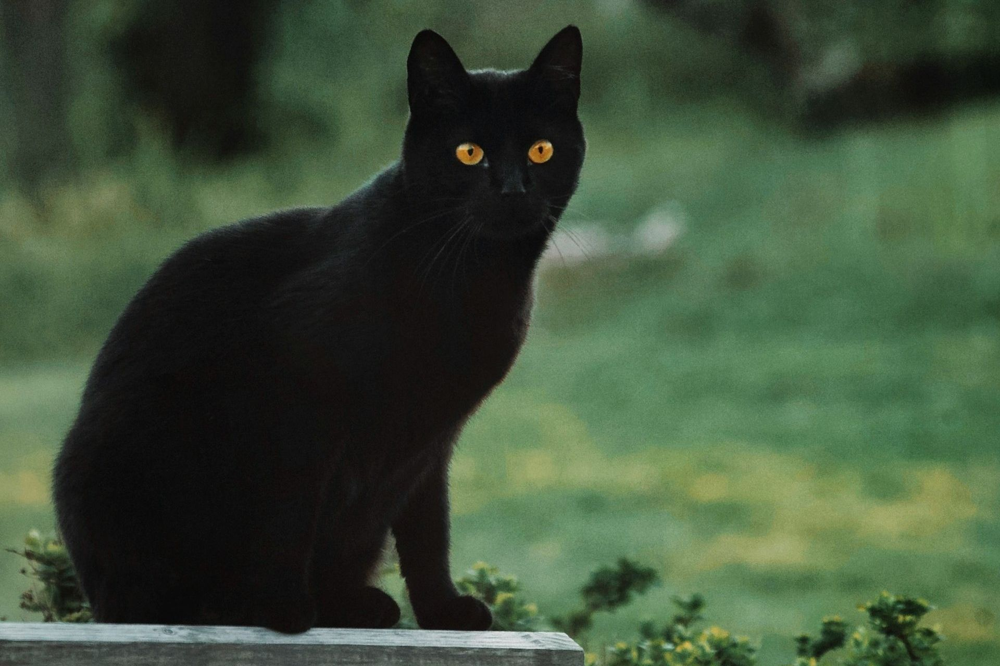
Cat Familiar
Catalogue number: cat-familiar.jpg
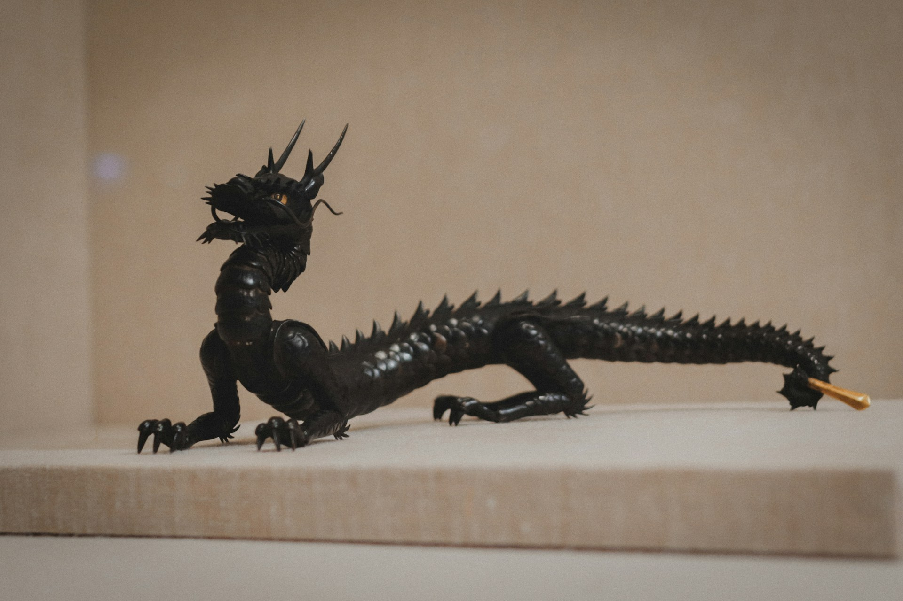
Black Dragon Familiar
Catalogue number: black-dragon-familiar.jpg
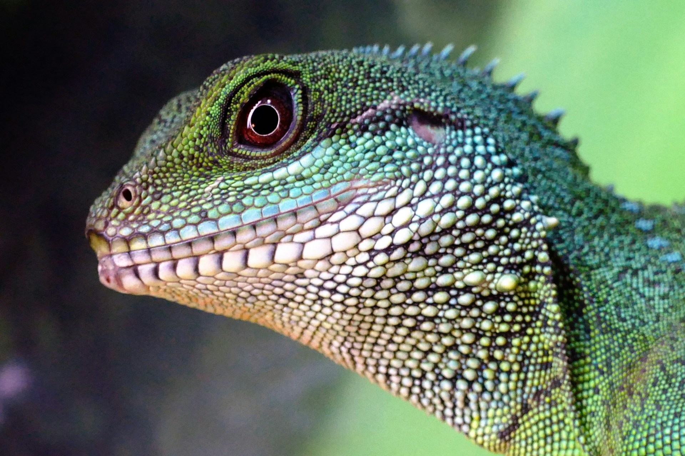
Green Dragon Familiar
Catalogue number: green-dragon-familiar.jpg
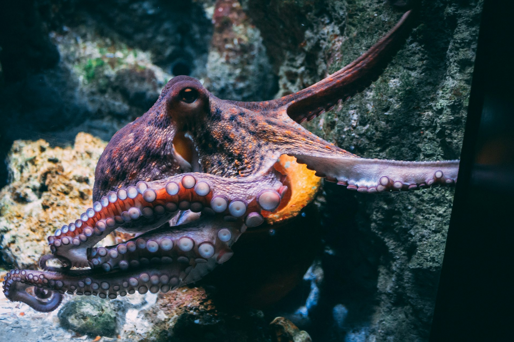
Octopus Familiar
Catalogue number: octopus-familiar.jpg
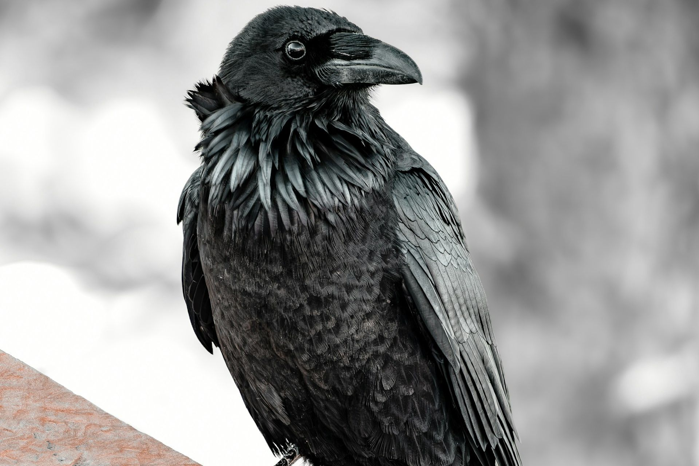
Raven Familiar
Catalogue number: raven-familiar.jpg
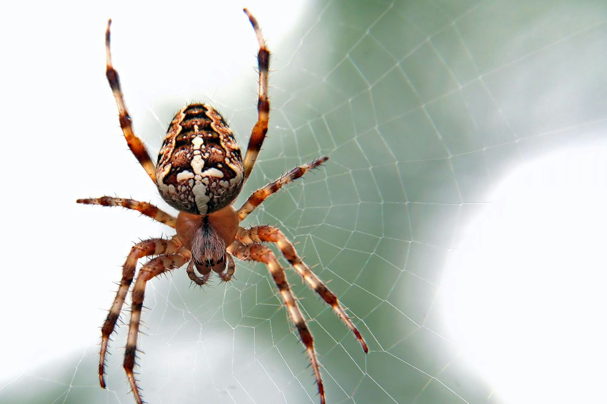
Spider Familiar
Catalogue number: spider-familiar.jpg
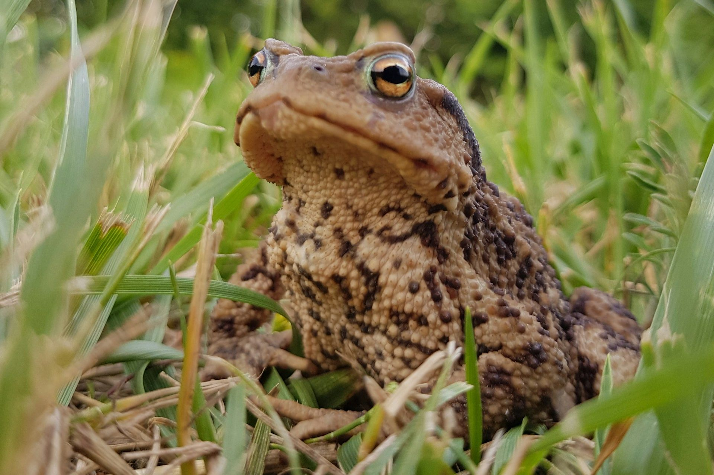
Toad Familiar
Catalogue number: toad-familiar.jpg